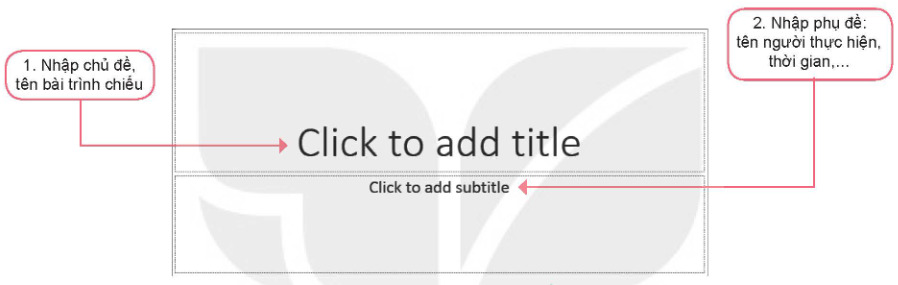
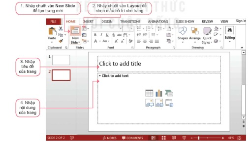

Dành cho giáo viên
Theo dõi lớp
| Học sinh / Nhóm | Đã nộp | Cập nhật |
|---|
Bước 1
1 Khởi động
Khởi động Báo cáo dự án Trường học xanh
Giờ ra chơi, các bạn An, Minh và Khoa trao đổi về dự án Trường học xanh mà các bạn đang thực hiện.
An: Việc khảo sát, thu thập thông tin và tính toán cho dự án đã xong. Bây giờ nhóm mình cần làm một bài báo cáo kết quả.
Minh: Nhóm mình nên sử dụng phần mềm trình chiếu để tạo bài báo cáo.
Khoa: Bài trình chiếu báo cáo cần có trang tiêu đề, mỗi trang nội dung nên có tiêu đề trang để giúp người nghe nhanh chóng hiểu được chủ đề và nội dung trình bày.
Minh: Sử dụng cấu trúc phân cấp sẽ làm cho bố cục của bài báo cáo được mạch lạc, rõ ràng.
An: Hay quá! Chúng ta phân công nhau làm từng phần việc nhé.
An: Việc khảo sát, thu thập thông tin và tính toán cho dự án đã xong. Bây giờ nhóm mình cần làm một bài báo cáo kết quả.
Minh: Nhóm mình nên sử dụng phần mềm trình chiếu để tạo bài báo cáo.
Khoa: Bài trình chiếu báo cáo cần có trang tiêu đề, mỗi trang nội dung nên có tiêu đề trang để giúp người nghe nhanh chóng hiểu được chủ đề và nội dung trình bày.
Minh: Sử dụng cấu trúc phân cấp sẽ làm cho bố cục của bài báo cáo được mạch lạc, rõ ràng.
An: Hay quá! Chúng ta phân công nhau làm từng phần việc nhé.
Ghi bài Khởi động
Sau khi thầy cô chốt, em chép nội dung dưới đây vào vở.
Bước 2 · Hình thành kiến thức mới
2.1 Một số chức năng cơ bản của phần mềm trình chiếu
Hoạt động 1 Một số chức năng cơ bản của phần mềm trình chiếu
1. Em đã biết gì về phần mềm trình chiếu? 2. Khi tạo một bài trình bày với nội dung gồm văn bản, hình ảnh và nhiều đối tượng khác, em chọn sử dụng phần mềm soạn thảo văn bản hay phần mềm trình chiếu? Vì sao?
Đọc mục 1 (SGK trang 55). Ở Lớp 3 và Lớp 4 các em đã biết phần mềm trình chiếu là phần mềm được thiết kế để cho phép người sử dụng trình bày thông tin như văn bản, hình ảnh, âm thanh và video dưới hình thức trình chiếu một cách hấp dẫn và hiệu quả. Phần mềm trình chiếu có các chức năng hỗ trợ người sử dụng tạo các bài trình chiếu:
Đọc mục 1 (SGK trang 55). Ở Lớp 3 và Lớp 4 các em đã biết phần mềm trình chiếu là phần mềm được thiết kế để cho phép người sử dụng trình bày thông tin như văn bản, hình ảnh, âm thanh và video dưới hình thức trình chiếu một cách hấp dẫn và hiệu quả. Phần mềm trình chiếu có các chức năng hỗ trợ người sử dụng tạo các bài trình chiếu:
- Tạo bài trình chiếu lưu trên máy tính dưới dạng tệp tin. Chức năng này bao gồm soạn thảo, chỉnh sửa, định dạng văn bản. Mỗi bài trình chiếu gồm một hay nhiều trang chiếu (slide) được đánh số thứ tự. Thông tin trên mỗi trang có thể là văn bản, âm thanh, hình ảnh, biểu đồ hay video.
- Trình chiếu nội dung các trang chiếu lên màn hình hoặc màn chiếu rộng bằng máy chiếu (projector).
Câu hỏi SGK trang 56
Ghi bài 1. Chức năng của phần mềm trình chiếu
Sau khi thầy cô chốt, em chép nội dung dưới đây vào vở.
Bước 2 · Hình thành kiến thức mới
2.2 Tiêu đề của bài trình chiếu
Hoạt động 2 Tạo tiêu đề của bài trình chiếu
1. Khi tạo bài trình chiếu, em thường trình bày các trang như thế nào? 2. Theo em, tiêu đề của bài trình chiếu nên đặt ở trang nào? Muốn làm nổi bật nội dung của mỗi trang thì cần làm như thế nào?
Đọc mục 2 (SGK trang 56). Một bài trình chiếu thường có nhiều trang được đánh số thứ tự. Trang đầu tiên là trang tiêu đề, còn lại là các trang nội dung. Nội dung trên các trang thường được bố trí thống nhất theo cùng một mẫu. Trang tiêu đề (Title Slide) cho biết chủ đề của bài trình chiếu. Trang tiêu đề còn có thêm thông tin như tên tác giả, ngày trình bày, địa điểm trình bày,… Trang này được ví như cổng vào bài trình chiếu, nó thu hút sự chú ý của người nghe ngay từ đầu. Trang nội dung thường có tiêu đề trang và nội dung (Title and Content). Tiêu đề trang được viết dưới dạng văn bản ở trên đầu mỗi trang. Tiêu đề trang là thành phần làm nổi bật nội dung cần trình bày. Mẫu bố trí nội dung trang trình chiếu (layout): các phần mềm trình chiếu có sẵn các mẫu bố trí nội dung. Người sử dụng có thể sử dụng các mẫu này hoặc thay đổi bố trí nội dung của trang sao cho phù hợp. Em cũng có thể tự tạo mẫu bố trí cho trang chiếu.
Đọc mục 2 (SGK trang 56). Một bài trình chiếu thường có nhiều trang được đánh số thứ tự. Trang đầu tiên là trang tiêu đề, còn lại là các trang nội dung. Nội dung trên các trang thường được bố trí thống nhất theo cùng một mẫu. Trang tiêu đề (Title Slide) cho biết chủ đề của bài trình chiếu. Trang tiêu đề còn có thêm thông tin như tên tác giả, ngày trình bày, địa điểm trình bày,… Trang này được ví như cổng vào bài trình chiếu, nó thu hút sự chú ý của người nghe ngay từ đầu. Trang nội dung thường có tiêu đề trang và nội dung (Title and Content). Tiêu đề trang được viết dưới dạng văn bản ở trên đầu mỗi trang. Tiêu đề trang là thành phần làm nổi bật nội dung cần trình bày. Mẫu bố trí nội dung trang trình chiếu (layout): các phần mềm trình chiếu có sẵn các mẫu bố trí nội dung. Người sử dụng có thể sử dụng các mẫu này hoặc thay đổi bố trí nội dung của trang sao cho phù hợp. Em cũng có thể tự tạo mẫu bố trí cho trang chiếu.
Câu hỏi SGK trang 57
Ghi bài 2. Tiêu đề của bài trình chiếu
Sau khi thầy cô chốt, em chép nội dung dưới đây vào vở.
Bước 2 · Hình thành kiến thức mới
2.3 Cấu trúc phân cấp
Hoạt động 3 Cấu trúc phân cấp
Em hãy quan sát hai cách trình bày dự án Trường học xanh sau đây và cho biết cách trình bày nào dễ hiểu hơn?
| Cách 1 | Cách 2 |
|---|---|
| Dự án Trường học xanh - Ý tưởng - Vai trò của cây xanh - Đề xuất dự án - Kế hoạch - Khảo sát thực tế - Thực hiện - Phân công trồng và chăm sóc cây - Thời gian - Kết quả dự kiến - Kết luận |
Dự án Trường học xanh 1. Ý tưởng - Vai trò của cây xanh - Đề xuất dự án 2. Kế hoạch 2.1. Khảo sát thực tế 2.2. Thực hiện - Phân công trồng và chăm sóc cây - Thời gian 2.3. Kết quả dự kiến 3. Kết luận |
Trong Hoạt động 3, Cách 2 là hình thức trình bày theo cấu trúc phân cấp. Đây là một cấu trúc gồm danh sách nhiều cấp rất phổ biến trong soạn thảo văn bản, tạo các bài trình chiếu,… Cấu trúc phân cấp giúp truyền tải thông tin một cách mạch lạc, dễ hiểu và dễ quản lí. Người xem dễ dàng hiểu được bố cục của nội dung cần trình bày.
Câu hỏi SGK trang 57
Ghi bài 3. Cấu trúc phân cấp
Sau khi thầy cô chốt, em chép nội dung dưới đây vào vở.
Bước 2 · Thực hành
2.4 Thực hành: Tạo bài trình chiếu có tiêu đề, cấu trúc phân cấp
Nhiệm vụ Bài trình chiếu Trường học xanh
Nhiệm vụ: tạo bài trình chiếu báo cáo kết quả thực hiện dự án Trường học xanh của nhóm: bài trình chiếu có trang tiêu đề, các trang nội dung có tiêu đề trang; sử dụng cấu trúc phân cấp; lưu tệp với tên Truonghocxanh.pptx.
Hướng dẫn (SGK minh hoạ bằng Microsoft PowerPoint 2016):
Hướng dẫn (SGK minh hoạ bằng Microsoft PowerPoint 2016):
- a) Tạo bài trình chiếu. Bước 1. Khởi động PowerPoint. Phần mềm tự động tạo một bài trình chiếu mới; trang đầu tiên là trang tiêu đề: nhập chủ đề, tên bài trình chiếu vào Click to add title; nhập phụ đề (tên người thực hiện, thời gian,…) vào Click to add subtitle (Hình 11.1). Bước 2. Tạo các trang nội dung (Hình 11.2): nháy chuột vào New Slide để tạo trang mới; nháy chuột vào Layout để chọn mẫu bố trí cho trang; nhập tiêu đề của trang; nhập nội dung của trang.
- b) Tạo cấu trúc phân cấp. Bước 1. Đặt con trỏ soạn thảo ở đầu dòng cần tạo cấu trúc phân cấp (nếu cần tạo cấu trúc phân cấp giống nhau cho nhiều dòng em chọn đồng thời các dòng đó). Bước 2. Chọn lệnh Increase List Level (hoặc nhấn phím Tab) để tăng bậc phân cấp; chọn lệnh Decrease List Level (hoặc nhấn tổ hợp phím Shift+Tab) để giảm bậc phân cấp. Các dòng được tăng cấp sẽ tự động dịch chuyển sang phải một khoảng và giảm cỡ chữ; các dòng được giảm cấp sẽ tự động dịch chuyển sang trái một khoảng và tăng cỡ chữ.
- Thay đổi màu sắc, kí hiệu đầu dòng: đặt con trỏ soạn thảo ở đầu dòng cần thay đổi kí hiệu (hoặc chọn nhiều dòng); chọn Home, nháy chuột vào mũi tên bên phải lệnh Bullets hoặc Numbering, chọn Bullets and Numbering...; trong hộp thoại chọn Bulleted để thay đổi kí hiệu, Numbered để đánh số thứ tự, Color để đổi màu cho kí hiệu.
- c) Lưu bài trình chiếu với tên Truonghocxanh.pptx.


Làm trên phần mềm trình chiếu mô phỏng dưới đây: nhập trang tiêu đề như Hình 11.3, bấm New Slide, nhập tiêu đề Nội dung trình bày và các dòng như Hình 11.4 (mỗi dòng nhấn Enter). Sau đó đặt con trỏ vào dòng cần tăng cấp và nhấn Tab (giữ Shift và nháy để chọn nhiều dòng) cho đến khi giống Hình 11.8; đổi kí hiệu đầu dòng như Hình 11.9; bấm Trình chiếu để xem.
Ghi bài 4. Thực hành
Sau khi thầy cô chốt, em chép nội dung dưới đây vào vở.
Bước 3
3 Luyện tập
Luyện tập Câu hỏi SGK trang 60
Ghi bài Luyện tập
Sau khi thầy cô chốt, em chép nội dung dưới đây vào vở.
Bước 4
4 Vận dụng
Vận dụng Bài trình chiếu dự án của em
Có thể soạn thử trên phần mềm trình chiếu mô phỏng dưới đây (dùng cho cả Luyện tập câu 2) trước khi làm trên máy tính.
Ghi bài Vận dụng
Sau khi thầy cô chốt, em chép nội dung dưới đây vào vở.